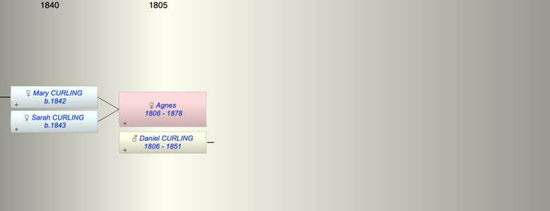
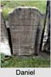

| [Index] |
| Agnes (1806 - 1878) |
|  |
|  |
| b. 1806 |
| +. Daniel CURLING (1806 - 1851) |
| d. 21 May 1878 at Trent Hills, Northumberland, Ontario aged 72 |
| Children (2): |
| Mary Duncan CURLING (1842 - ) |
| Sarah Ann CURLING (1843 - ) |
| Grandchildren (1): |
| John K DINWOODIE (1878 - ) |
| Events in Agnes (1806 - 1878)'s life | |||||
| Date | Age | Event | Place | Notes | Src |
| 1806 | Agnes was born | ||||
| 10 Jan 1842 | 36 | Birth of daughter Mary Duncan CURLING | Ontario, Canada | ex 1901 Canada census | |
| 10 Sep 1843 | 37 | Birth of daughter Sarah Ann CURLING | Ontario, Canada | from 1901 Canada Census | |
| 05 Sep 1851 | 45 | Death of husband Daniel CURLING (aged 45) | Trent Hills, Northumberland, Ontario | Note 1 | |
| 21 May 1878 | 72 | Agnes died | Trent Hills, Northumberland, Ontario | Note 2 | |
| Note 1: buried Christ Church Anglican, aged 55 ex FMP |
| Note 2: buried Christ Church Anglican, aged 73 ex FMP |
| Personal Notes: |
| 1871 census Canada - Agnes 64 living Northumberland, Ontario widowed with her daughter Ann 27 and son in law Robert Dinwoodie 48 |
| Created on a Mac™ using iFamily for Mac™ on 8 Oct 2023 |